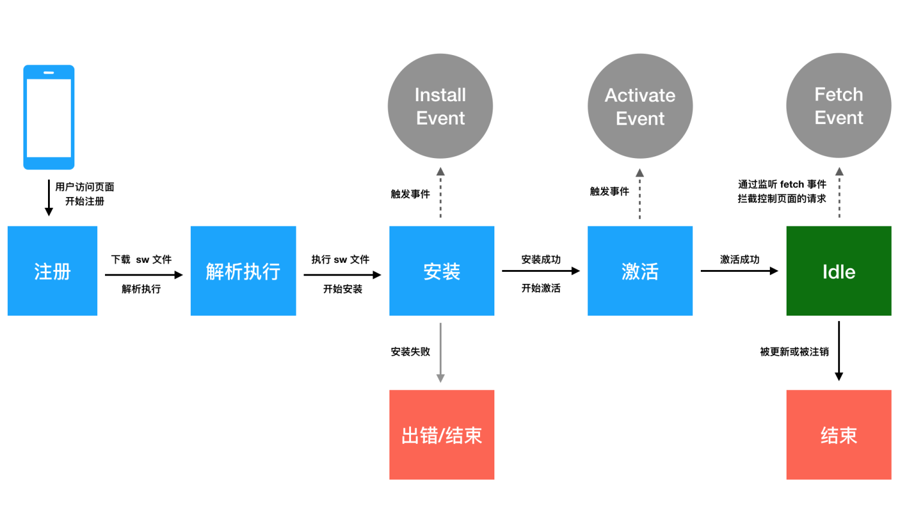
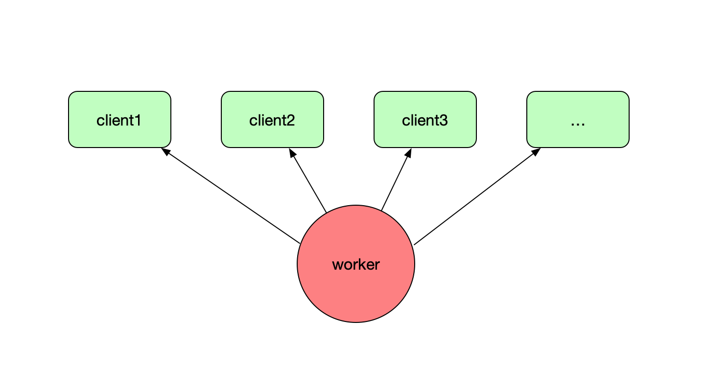
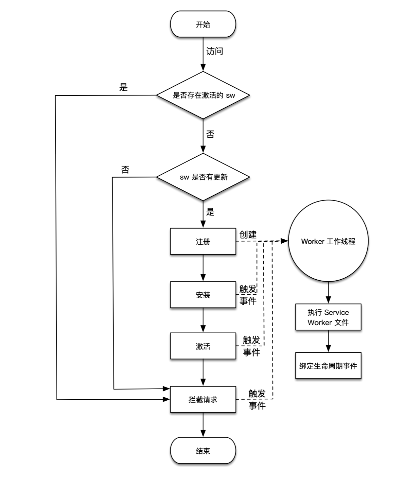
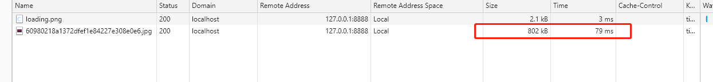
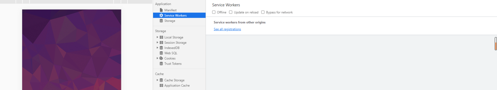
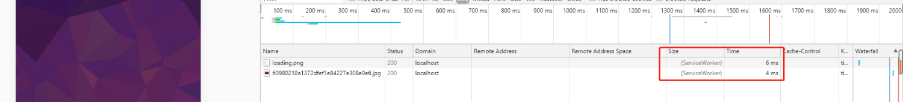
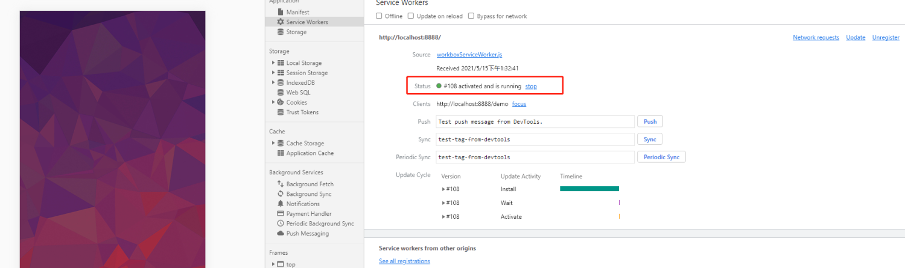
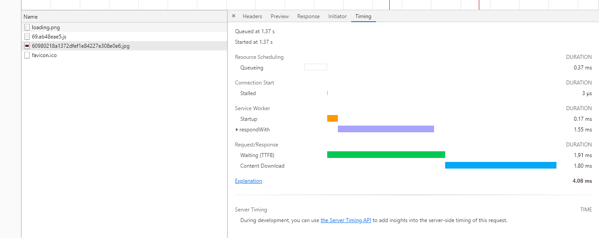

五个Why？
什么是Service Work？
Service Worker是浏览器在后台独立于网页运行的脚本，独立于页面，是一个worker线程，也可以理解为一个网络代理服务器。
不受页面刷新的影响，可以监听和截拦作用域范围内所有页面的 HTTP 请求；
Service Worker是PWA的重要组成部分，主要用来做持久的离线缓存；
Service Work能为前端提供什么基础能力？
ServiceWorker给前端开发者开放了内核大量的底层能力，比如，它给前端提供了细粒度操作请求缓存的底层原语，等同于给前端开放了操作HTTP Cache级别缓存的能力，与Fetch API结合，让前端具备了完全操控请求，响应，缓存的能力，这点对于pwa的实现至关重要。因此serviceWorker是pwa的核心。
实际应用中，为了兼容安卓与ios，serviceWorker的应用最广泛的还不在pwa上面，而是在网站的优化方面。
基于 Service Worker API 的特性，结合 Fetch API、Cache API、Push API、postMessage API 和 Notification API，可以在基于浏览器的 web 应用中实现如离线缓存、消息推送、静默更新等 native 应用常见的功能，以给 web 应用提供更好更丰富的使用体验。
Service Work的原理是什么？
Service Worker 的工作原理主要体现在它的生命周期上，一个 Service Worker 从被注册开始，就会经历自身的一些生命周期的节点，而在这些节点都可以去做一些特定的事情，比如一些复杂的计算、缓存的写入、缓存的读取等操作。通过这些生命周期节点的联合调度，Service Worker 才能完成复杂的资源离线缓存的工作。而开发者只有了解了 Service Worker 的生命周期，才能通过设计相关逻辑，并开发 Service Worker 文件 sw.js ，让 Service Worker 去完成 PWA 离线缓存策略。
生命周期
先来了解下什么是 Service Worker 的生命周期，每个 Service Worker 都有一个独立于 Web 页面的生命周期，其示意图如下图所示。

- 在主线程成功注册 Service Worker 之后，开始下载并解析执行 Service Worker 文件，执行过程中开始安装 Service Worker，在此过程中会触发 worker 线程的 install 事件。
- 如果 install 事件回调成功执行（在 install 回调中通常会做一些缓存读写的工作，可能会存在失败的情况），则开始激活 Service Worker，在此过程中会触发 worker 线程的 activate 事件，如果 install 事件回调执行失败，则生命周期进入 Error 终结状态，终止生命周期。（生命周期终止之后会影响页面的正常加载吗？）
- 完成激活之后，Service Worker 就能够控制作用域下的页面的资源请求，可以监听 fetch 事件。
（如何监听fetch事件？）
1 | |
- 如果在激活后 Service Worker 被 unregister 或者有新的 Service Worker 版本更新，则当前 Service Worker 生命周期完结，进入 Terminated 终结状态。
注意：
- 首次注册成功的 Service Worker 没能拦截当前页面的请求，非首次注册的 Service Worker 可以控制当前的页面并能拦截请求
（为什么首次注册的时候，却没有拦截到网络资源请求的？）
主要是因为在 Service Worker 的注册是一个异步的过程，在激活完成后当前页面的请求都已经发送完成，因为时机太晚，此时是拦截不到任何请求的，只能等待下次访问再进行。
而第二次刷新页面，由于当前站点的 Service Worker 是处于激活状态，所以不会再次新建 worker 工作线程并执行 Service Worker。也就是说激活状态的 Service Worker 在一个站点只会存在一个 worker 工作线程，除非 Service Worker 文件发生了变化（手动 unregister Service Worker 也会注销掉 worker 工作线程），触发了浏览器更新，才会重新开启生命周期。而由于 Service Worker 工作线程的离线特性，只要处于激活状态，在后续的任何访问中，都会通过 fetch 事件监听器拦截当前页面的网络请求，并执行
fetch事件回调。
- 在手机端或者 PC 端浏览器，每新打开一个已经激活了 Service Worker 的页面，那 Service Worker 所控制的终端就新增一个，每关闭一个包含已经激活了 Service Worker 页面的时候（不包含手机端浏览器进入后台运行的情况），则 Service Worker 所控制的终端就减少一个，如上图打开了三个浏览器标签，则当前 Service Worker 控制了三个终端，通过 Chrome 浏览器 Devtools 的
Applications -> ServiceWorker标签可以查看如下图所示 Service Worker 控制的三个终端。当刷新其中一个浏览器标签的时候，会发现一个奇怪的现象，当前的浏览器标签的控制台打印了一条信息，而并没有对其他的两个浏览器标签进行刷新，但是它们的控制台也出现了打印信息
主要是因为，所有的终端共用一个 worker 工作线程，当在 worker 线程中执行
console.log()方法打印内容的时候，会作用到所有的终端，worker 工作线程和终端的关系如下图所示。
Service Worker 在内部都有一系列的工作流程，这些工作流程决定了开发者可以在 Service Worker 文件中如何进行开发。下图展示的是 Service Worker 工作流程图。

JS中如何使用它？
首先在页面注册一个service worker
1 | |
接着就可以在Service worker中尽情畅想，以页面的离线应用为出发点，说明sw如实做到离线应用的。
1 | |
在我们现有的React项目中怎么去使用它？
前提条件
Service Worker 出于安全性和其实现原理，在使用的时候有一定的前提条件。
- 由于 Service Worker 要求 HTTPS 的环境，我们通常可以借助于 github page 进行学习调试。当然一般浏览器允许调试 Service Worker 的时候 host 为 localhost 或者 127.0.0.1 也是 ok 的。
- Service Worker 的缓存机制是依赖 Cache API 实现的
- 依赖 HTML5 fetch API
- 依赖 Promise 实现
浏览器兼容性
https://caniuse.com/?search=serviceWork
workbox方案：workbox-webpack-plugin
官方文档: https://developers.google.com/web/tools/workbox/modules/workbox-webpack-plugin
插件版本
1 | |
安装
1 | |
配置
- webpack插件中使用~
1 | |
- 在react入口js的代码里注册代码
1 | |
效果对比
针对urlPattern: /\.(?:png|jpg|jpeg|svg)$/,图片加载速度，在开启sw前后进行对比
未开启sw之前，原图是800KB左右，加载时间是79ms左右：


service work中没有信息

开启sw之后，图片显示加载自ServiceWorker，且加载时间为4ms，速度提升20倍左右：



参考
React如何通过Webpack优雅的接入serviceWorker的成熟方案workBox && Google Analytics